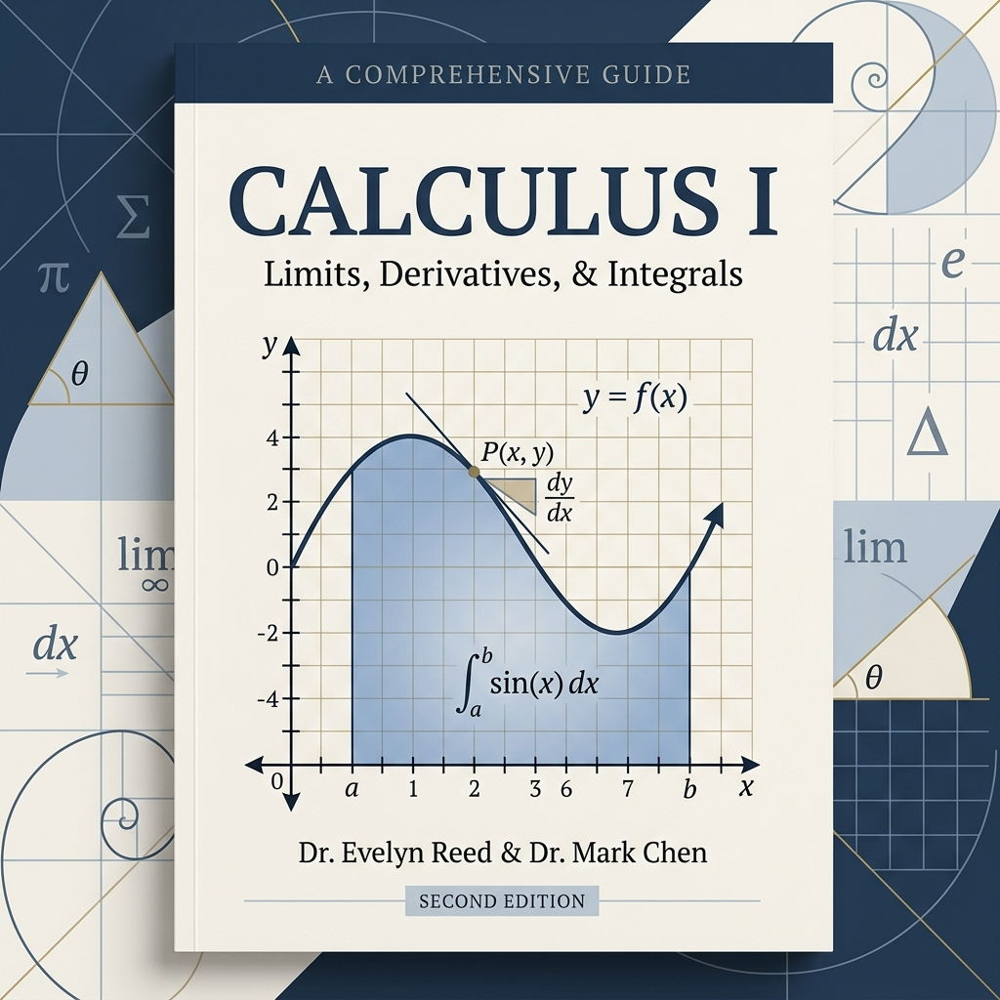
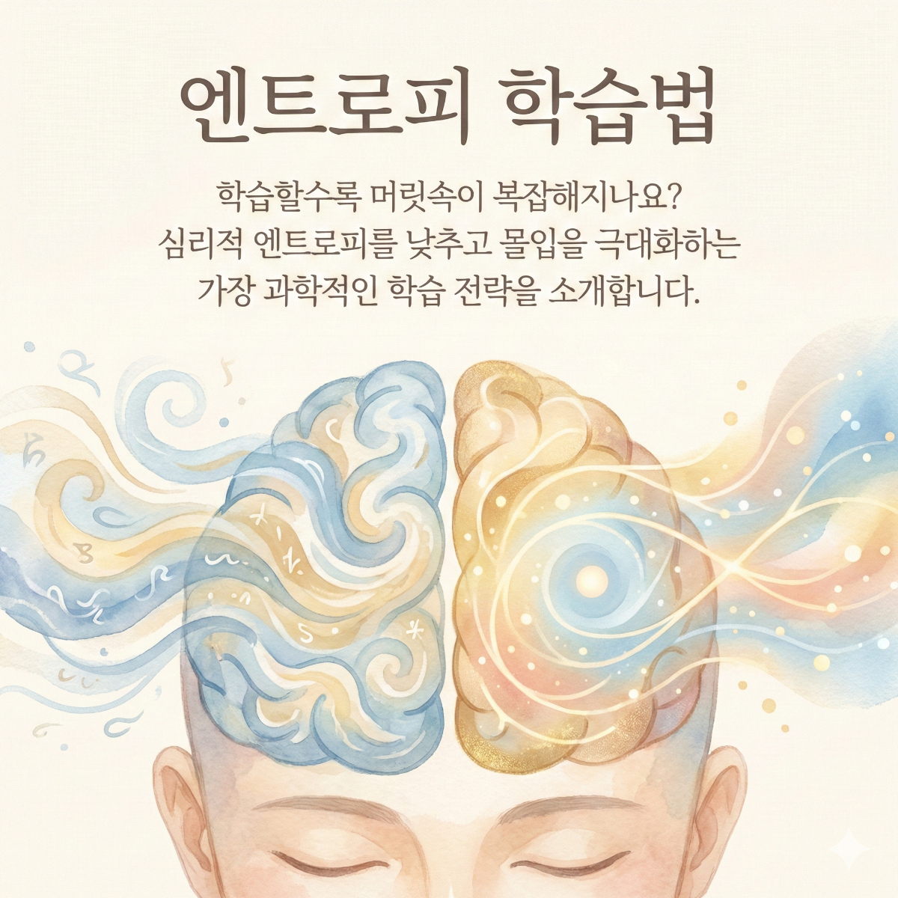
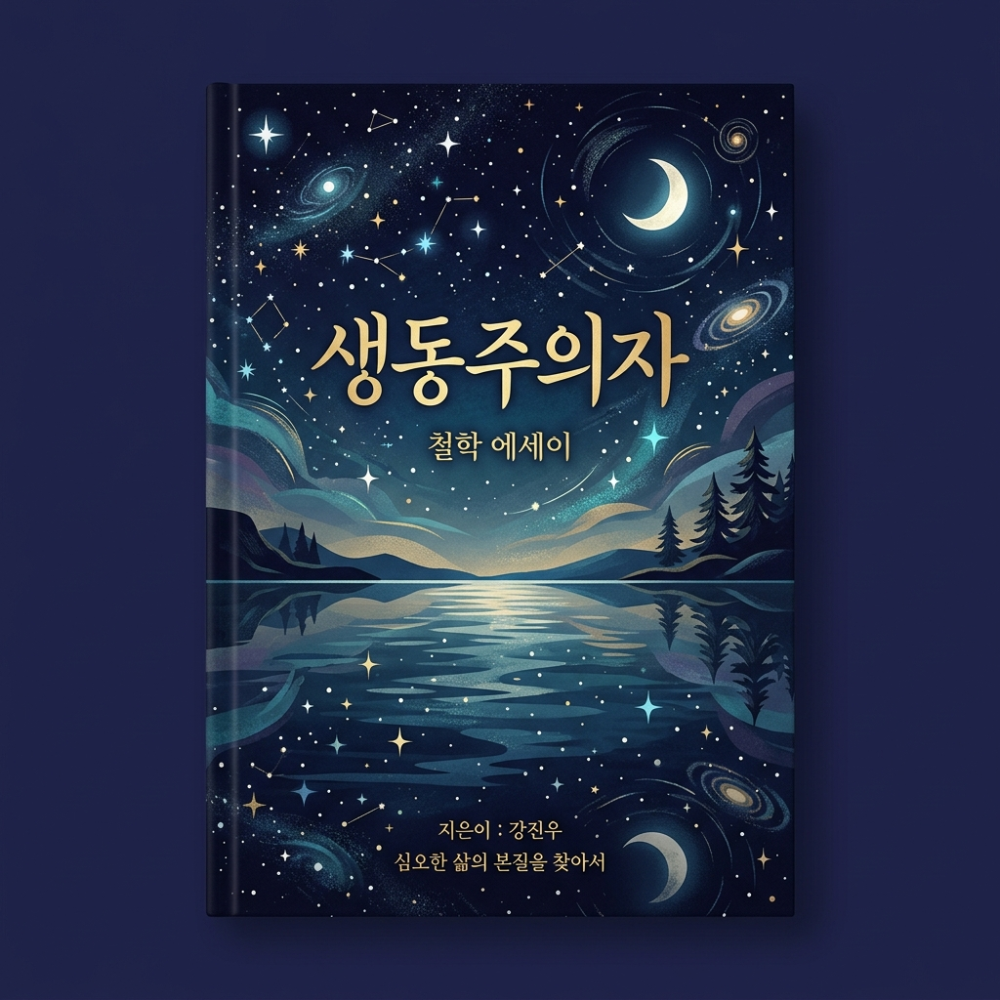

Archive S : Digital Library
#전체
#수학
#철학
#학습법
#신작
Science & Math
View All

미적분 I - 서브교과서
Mathematics · New
Humanities & Method
View All

엔트로피 학습법
Methodology · Best

생동주의자
Philosophy · Essay
홈
서재
검색
후원